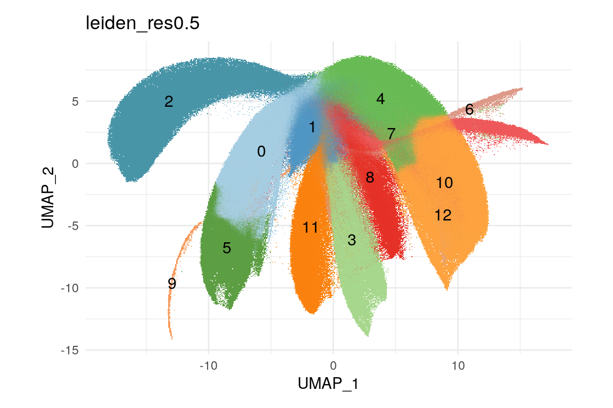

Cell type annotations for PIPAC data
heinin
2025-02-04
Last updated: 2025-02-09
Checks: 5 2
Knit directory: PIPAC_spatial/
This reproducible R Markdown analysis was created with workflowr (version 1.7.1). The Checks tab describes the reproducibility checks that were applied when the results were created. The Past versions tab lists the development history.
The R Markdown is untracked by Git. To know which version of the R
Markdown file created these results, you’ll want to first commit it to
the Git repo. If you’re still working on the analysis, you can ignore
this warning. When you’re finished, you can run
wflow_publish to commit the R Markdown file and build the
HTML.
Great job! The global environment was empty. Objects defined in the global environment can affect the analysis in your R Markdown file in unknown ways. For reproduciblity it’s best to always run the code in an empty environment.
The command set.seed(20240917) was run prior to running
the code in the R Markdown file. Setting a seed ensures that any results
that rely on randomness, e.g. subsampling or permutations, are
reproducible.
Great job! Recording the operating system, R version, and package versions is critical for reproducibility.
Nice! There were no cached chunks for this analysis, so you can be confident that you successfully produced the results during this run.
Using absolute paths to the files within your workflowr project makes it difficult for you and others to run your code on a different machine. Change the absolute path(s) below to the suggested relative path(s) to make your code more reproducible.
| absolute | relative |
|---|---|
| /home/hnatri/PIPAC_spatial/ | . |
| /home/hnatri/PIPAC_spatial/code/PIPAC_colors_themes.R | code/PIPAC_colors_themes.R |
| /home/hnatri/PIPAC_spatial/code/plot_functions.R | code/plot_functions.R |
| /home/hnatri/PIPAC_spatial/main_cluster_marker_annotations.tsv | main_cluster_marker_annotations.tsv |
Great! You are using Git for version control. Tracking code development and connecting the code version to the results is critical for reproducibility.
The results in this page were generated with repository version 668678e. See the Past versions tab to see a history of the changes made to the R Markdown and HTML files.
Note that you need to be careful to ensure that all relevant files for
the analysis have been committed to Git prior to generating the results
(you can use wflow_publish or
wflow_git_commit). workflowr only checks the R Markdown
file, but you know if there are other scripts or data files that it
depends on. Below is the status of the Git repository when the results
were generated:
Untracked files:
Untracked: analysis/Xenium_processing.Rmd
Untracked: analysis/annotation.Rmd
Untracked: analysis/post_clustering.Rmd
Untracked: analysis/splitting_samples.Rmd
Untracked: code/PIPAC_colors_themes.R
Untracked: code/anndata_to_seurat.R
Untracked: code/plot_functions.R
Untracked: code/rapids_pipeline/
Untracked: main_cluster_marker_annotations.tsv
Note that any generated files, e.g. HTML, png, CSS, etc., are not included in this status report because it is ok for generated content to have uncommitted changes.
There are no past versions. Publish this analysis with
wflow_publish() to start tracking its development.
Packages and environment variables
suppressPackageStartupMessages({
library(workflowr)
library(arrow)
library(Seurat)
library(SeuratObject)
library(SeuratDisk)
library(tidyverse)
library(tibble)
library(ggplot2)
library(ggpubr)
library(ggrepel)
library(googlesheets4)
library(workflowr)})Environment variables and helper functions
setwd("/home/hnatri/PIPAC_spatial/")
set.seed(9999)
options(scipen = 99999)
options(ggrepel.max.overlaps = Inf)
source("/home/hnatri/PIPAC_spatial/code/PIPAC_colors_themes.R")
source("/home/hnatri/PIPAC_spatial/code/plot_functions.R")Import data
# Copied to isilon /tgen_labs/banovich/PIPAC/Seurat
seurat_data <- readRDS("/scratch/hnatri/PIPAC/merged_spatial_filtered_split_clustered_NC50_NN20_PC20_Seurat.rds")
head(seurat_data@meta.data) orig.ident nCount_RNA nFeature_RNA
S21-24369_2A_TMA1_aaaafhkm-1_1 SeuratProject 16.17795 19
S21-7951_5A_TMA1_aaabeech-1_1 SeuratProject 46.16673 52
S21-7951_5A_TMA1_aaabidlm-1_1 SeuratProject 14.42256 19
S21-7951_5A_TMA1_aaacanmk-1_1 SeuratProject 15.59016 20
S21-7951_5A_TMA1_aaacnggd-1_1 SeuratProject 22.41628 28
S21-7951_5A_TMA1_aaacoafb-1_1 SeuratProject 37.49697 39
cell_id x_centroid
S21-24369_2A_TMA1_aaaafhkm-1_1 S21-24369_2A_TMA1_aaaafhkm-1_1 3120.635
S21-7951_5A_TMA1_aaabeech-1_1 S21-7951_5A_TMA1_aaabeech-1_1 3260.058
S21-7951_5A_TMA1_aaabidlm-1_1 S21-7951_5A_TMA1_aaabidlm-1_1 3167.581
S21-7951_5A_TMA1_aaacanmk-1_1 S21-7951_5A_TMA1_aaacanmk-1_1 3158.915
S21-7951_5A_TMA1_aaacnggd-1_1 S21-7951_5A_TMA1_aaacnggd-1_1 3176.202
S21-7951_5A_TMA1_aaacoafb-1_1 S21-7951_5A_TMA1_aaacoafb-1_1 3074.708
y_centroid transcript_counts
S21-24369_2A_TMA1_aaaafhkm-1_1 3213.421 34
S21-7951_5A_TMA1_aaabeech-1_1 5974.841 153
S21-7951_5A_TMA1_aaabidlm-1_1 6008.590 68
S21-7951_5A_TMA1_aaacanmk-1_1 6016.890 45
S21-7951_5A_TMA1_aaacnggd-1_1 6007.106 194
S21-7951_5A_TMA1_aaacoafb-1_1 5485.156 75
control_probe_counts genomic_control_counts
S21-24369_2A_TMA1_aaaafhkm-1_1 0 0
S21-7951_5A_TMA1_aaabeech-1_1 0 0
S21-7951_5A_TMA1_aaabidlm-1_1 0 0
S21-7951_5A_TMA1_aaacanmk-1_1 0 0
S21-7951_5A_TMA1_aaacnggd-1_1 0 0
S21-7951_5A_TMA1_aaacoafb-1_1 0 0
control_codeword_counts
S21-24369_2A_TMA1_aaaafhkm-1_1 0
S21-7951_5A_TMA1_aaabeech-1_1 0
S21-7951_5A_TMA1_aaabidlm-1_1 0
S21-7951_5A_TMA1_aaacanmk-1_1 0
S21-7951_5A_TMA1_aaacnggd-1_1 0
S21-7951_5A_TMA1_aaacoafb-1_1 0
unassigned_codeword_counts
S21-24369_2A_TMA1_aaaafhkm-1_1 0
S21-7951_5A_TMA1_aaabeech-1_1 0
S21-7951_5A_TMA1_aaabidlm-1_1 0
S21-7951_5A_TMA1_aaacanmk-1_1 0
S21-7951_5A_TMA1_aaacnggd-1_1 0
S21-7951_5A_TMA1_aaacoafb-1_1 0
deprecated_codeword_counts total_counts
S21-24369_2A_TMA1_aaaafhkm-1_1 0 34
S21-7951_5A_TMA1_aaabeech-1_1 0 153
S21-7951_5A_TMA1_aaabidlm-1_1 0 68
S21-7951_5A_TMA1_aaacanmk-1_1 0 45
S21-7951_5A_TMA1_aaacnggd-1_1 0 194
S21-7951_5A_TMA1_aaacoafb-1_1 0 75
cell_area nucleus_area nucleus_count
S21-24369_2A_TMA1_aaaafhkm-1_1 60.64485 33.68656 1
S21-7951_5A_TMA1_aaabeech-1_1 146.26110 32.06094 2
S21-7951_5A_TMA1_aaabidlm-1_1 75.36578 32.06094 1
S21-7951_5A_TMA1_aaacanmk-1_1 49.67188 18.78500 1
S21-7951_5A_TMA1_aaacnggd-1_1 126.75360 24.97141 1
S21-7951_5A_TMA1_aaacoafb-1_1 29.89344 14.90156 1
segmentation_method
S21-24369_2A_TMA1_aaaafhkm-1_1 Segmented by boundary stain (ATP1A1+CD45+E-Cadherin)
S21-7951_5A_TMA1_aaabeech-1_1 Segmented by boundary stain (ATP1A1+CD45+E-Cadherin)
S21-7951_5A_TMA1_aaabidlm-1_1 Segmented by boundary stain (ATP1A1+CD45+E-Cadherin)
S21-7951_5A_TMA1_aaacanmk-1_1 Segmented by boundary stain (ATP1A1+CD45+E-Cadherin)
S21-7951_5A_TMA1_aaacnggd-1_1 Segmented by boundary stain (ATP1A1+CD45+E-Cadherin)
S21-7951_5A_TMA1_aaacoafb-1_1 Segmented by boundary stain (ATP1A1+CD45+E-Cadherin)
num.blank TMA percent.blank
S21-24369_2A_TMA1_aaaafhkm-1_1 0 MR_PIPAC-TMA1 0
S21-7951_5A_TMA1_aaabeech-1_1 0 MR_PIPAC-TMA1 0
S21-7951_5A_TMA1_aaabidlm-1_1 0 MR_PIPAC-TMA1 0
S21-7951_5A_TMA1_aaacanmk-1_1 0 MR_PIPAC-TMA1 0
S21-7951_5A_TMA1_aaacnggd-1_1 0 MR_PIPAC-TMA1 0
S21-7951_5A_TMA1_aaacoafb-1_1 0 MR_PIPAC-TMA1 0
nCount_cell_RNA nFeature_cell_RNA Sample
S21-24369_2A_TMA1_aaaafhkm-1_1 34 22 S21-24369_2A
S21-7951_5A_TMA1_aaabeech-1_1 153 72 S21-7951_5A
S21-7951_5A_TMA1_aaabidlm-1_1 68 37 S21-7951_5A
S21-7951_5A_TMA1_aaacanmk-1_1 45 31 S21-7951_5A
S21-7951_5A_TMA1_aaacnggd-1_1 194 88 S21-7951_5A
S21-7951_5A_TMA1_aaacoafb-1_1 75 40 S21-7951_5A
ident leiden_res0.5 leiden_res1.0
S21-24369_2A_TMA1_aaaafhkm-1_1 SeuratProject 2 6
S21-7951_5A_TMA1_aaabeech-1_1 SeuratProject 10 2
S21-7951_5A_TMA1_aaabidlm-1_1 SeuratProject 4 4
S21-7951_5A_TMA1_aaacanmk-1_1 SeuratProject 4 21
S21-7951_5A_TMA1_aaacnggd-1_1 SeuratProject 10 2
S21-7951_5A_TMA1_aaacoafb-1_1 SeuratProject 5 1
leiden_res1.5 leiden_res2.0 Institution
S21-24369_2A_TMA1_aaaafhkm-1_1 8 12 NWH
S21-7951_5A_TMA1_aaabeech-1_1 27 35 NWH
S21-7951_5A_TMA1_aaabidlm-1_1 2 8 NWH
S21-7951_5A_TMA1_aaacanmk-1_1 2 31 NWH
S21-7951_5A_TMA1_aaacnggd-1_1 27 35 NWH
S21-7951_5A_TMA1_aaacoafb-1_1 22 40 NWH
Patient_ID Timepoint Tissue Location_Quadrant
S21-24369_2A_TMA1_aaaafhkm-1_1 S21-NWH-012 12 Tumor Right Lower
S21-7951_5A_TMA1_aaabeech-1_1 S21-NWH-011 0 Normal Unknown
S21-7951_5A_TMA1_aaabidlm-1_1 S21-NWH-011 0 Normal Unknown
S21-7951_5A_TMA1_aaacanmk-1_1 S21-NWH-011 0 Normal Unknown
S21-7951_5A_TMA1_aaacnggd-1_1 S21-NWH-011 0 Normal Unknown
S21-7951_5A_TMA1_aaacoafb-1_1 S21-NWH-011 0 Normal Unknownunique(seurat_data$leiden_res0.5) [1] 2 10 4 5 1 3 9 11 0 7 8 6 12
Levels: 0 1 2 3 4 5 6 7 8 9 10 11 12DimPlot(seurat_data,
group.by = "leiden_res0.5",
cols = pipac_cluster_col,
reduction = "umap",
raster = T,
label = T) +
coord_fixed(ratio = 1) +
theme_minimal() +
NoLegend()
Marker information
gs4_deauth()
markers <- gs4_get("https://docs.google.com/spreadsheets/d/1sXXwOreLxjMSUoPt79c6jmaQpluWkaxA5P5HfDsed3I/edit?usp=sharing")
markers <- read_sheet(markers, sheet = "Markers")
head(markers)# A tibble: 6 × 8
Gene Ensemble_ID Num_Probesets Codewords Annotation Annotation2 Annotation3
<chr> <chr> <dbl> <dbl> <chr> <chr> <chr>
1 CMKLR1 ENSG0000017… 8 1 Angiogene… Tumor Tumor
2 BCL2 ENSG0000017… 8 1 Apoptosis <NA> <NA>
3 FADD ENSG0000016… 7 1 Apoptosis… Tumor Tumor
4 LAMP2 ENSG0000000… 5 1 Autophagy <NA> <NA>
5 ADAM28 ENSG0000004… 4 1 B Cell Bcell Lymphoid
6 BANK1 ENSG0000015… 8 1 B Cell Bcell Lymphoid
# ℹ 1 more variable: Annotation4 <chr>table(markers$Annotation4)
Cellcycle Cytoskeleton
4 1
Cytoskelton Endothelial
1 1
Epithelial Epithelial;Tumor
8 3
Immune Immune;Epithelial
198 1
Immune;Mesenchymal;Stromal Immune;Signaling
1 16
Immune;Tumor Mesenchymal
1 4
Mesenchymal;Immune Signaling
1 24
Stromal Tumor
2 52 Top cluster markers
Idents(seurat_data) <- seurat_data$leiden_res0.5
cluster_markers <- FindAllMarkers(seurat_data,
return.thresh = 0.01,
logfc.threshold = 0.5,
min.pct = 0.20,
verbose = T)
table(cluster_markers$cluster)
0 1 2 3 4 5 6 7 8 9 10 11 12
50 33 100 89 37 121 84 43 34 56 46 66 53 hist(cluster_markers$avg_log2FC, main = "", xlab = "avg_log2FC", breaks = 100)hist(cluster_markers$p_val, main = "", xlab = "p_val", breaks = 100)hist(cluster_markers$p_val_adj, main = "", xlab = "p_val_adj", breaks = 100)top_cluster_markers <- cluster_markers %>%
arrange(dplyr::desc(avg_log2FC)) %>%
group_by(cluster) %>%
dplyr::slice(1:10)plot_features <- c("PTPRC",
"CD3D", "CD3E", "CD4", "CD8A", # T cells
"STAT4", "STAT3", "TIGIT", "GZMB",
"SELL", "CD19", # B cells
"CD68", "CD44", "MARCO", # Macrophages
"C1QB", "C1QBP",
"MUC5AC", "NOTCH3", "MS4A1", "PGA5", # Lineage markers
"FN1", "DCN", "LUM", # Fibroblasts
"EGR3", "TP53", "JUN", "KIT", # Tumor
"SOX9", "RNF43")
DotPlot(seurat_data,
group.by = "leiden_res0.5",
features = plot_features,
cols = c("azure", "tomato3")) +
RotatedAxis()create_dotplot_heatmap(seurat_object = seurat_data,
plot_features = unique(top_cluster_markers$gene),
group_var = "leiden_res0.5",
group_colors = pipac_cluster_col,
column_title = "",
row_km = 5,
col_km = 5,
row.order = NULL,
col.order = NULL)
Saving top markers and annotations
output_cluster_markers <- cluster_markers %>%
arrange(dplyr::desc(avg_log2FC)) %>%
group_by(cluster) %>%
dplyr::slice(1:30)
output_cluster_markers <- merge(top_cluster_markers, markers, by.x = "gene", by.y = "Gene")
write.table(output_cluster_markers, "/home/hnatri/PIPAC_spatial/main_cluster_marker_annotations.tsv",
quote = F, row.names = F, sep = "\t")
sessionInfo()R version 4.3.0 (2023-04-21)
Platform: x86_64-pc-linux-gnu (64-bit)
Running under: Ubuntu 22.04.3 LTS
Matrix products: default
BLAS: /usr/lib/x86_64-linux-gnu/openblas-pthread/libblas.so.3
LAPACK: /usr/lib/x86_64-linux-gnu/openblas-pthread/libopenblasp-r0.3.20.so; LAPACK version 3.10.0
locale:
[1] LC_CTYPE=en_US.UTF-8 LC_NUMERIC=C
[3] LC_TIME=en_US.UTF-8 LC_COLLATE=en_US.UTF-8
[5] LC_MONETARY=en_US.UTF-8 LC_MESSAGES=en_US.UTF-8
[7] LC_PAPER=en_US.UTF-8 LC_NAME=C
[9] LC_ADDRESS=C LC_TELEPHONE=C
[11] LC_MEASUREMENT=en_US.UTF-8 LC_IDENTIFICATION=C
time zone: Etc/UTC
tzcode source: system (glibc)
attached base packages:
[1] grid stats graphics grDevices utils datasets methods
[8] base
other attached packages:
[1] ComplexHeatmap_2.18.0 viridis_0.6.3 viridisLite_0.4.2
[4] circlize_0.4.15 plyr_1.8.8 RColorBrewer_1.1-3
[7] googlesheets4_1.1.0 ggrepel_0.9.3 ggpubr_0.6.0
[10] lubridate_1.9.2 forcats_1.0.0 stringr_1.5.0
[13] dplyr_1.1.2 purrr_1.0.2 readr_2.1.4
[16] tidyr_1.3.0 tibble_3.2.1 ggplot2_3.4.2
[19] tidyverse_2.0.0 SeuratDisk_0.0.0.9021 Seurat_5.0.1
[22] SeuratObject_5.0.2 sp_1.6-1 arrow_12.0.0
[25] workflowr_1.7.1
loaded via a namespace (and not attached):
[1] RcppAnnoy_0.0.20 splines_4.3.0 later_1.3.1
[4] cellranger_1.1.0 polyclip_1.10-4 fastDummies_1.7.3
[7] lifecycle_1.0.3 rstatix_0.7.2 doParallel_1.0.17
[10] rprojroot_2.0.3 globals_0.16.2 processx_3.8.1
[13] lattice_0.21-8 hdf5r_1.3.8 MASS_7.3-60
[16] backports_1.4.1 magrittr_2.0.3 limma_3.58.1
[19] plotly_4.10.2 sass_0.4.6 rmarkdown_2.22
[22] jquerylib_0.1.4 yaml_2.3.7 httpuv_1.6.11
[25] sctransform_0.4.1 spam_2.9-1 spatstat.sparse_3.0-1
[28] reticulate_1.29 cowplot_1.1.1 pbapply_1.7-0
[31] abind_1.4-5 Rtsne_0.16 presto_1.0.0
[34] BiocGenerics_0.48.1 git2r_0.32.0 S4Vectors_0.40.2
[37] IRanges_2.36.0 irlba_2.3.5.1 listenv_0.9.0
[40] spatstat.utils_3.0-3 goftest_1.2-3 RSpectra_0.16-1
[43] spatstat.random_3.1-5 fitdistrplus_1.1-11 parallelly_1.36.0
[46] leiden_0.4.3 codetools_0.2-19 tidyselect_1.2.0
[49] shape_1.4.6 farver_2.1.1 stats4_4.3.0
[52] matrixStats_1.0.0 spatstat.explore_3.2-1 googledrive_2.1.0
[55] jsonlite_1.8.5 GetoptLong_1.0.5 ellipsis_0.3.2
[58] progressr_0.13.0 iterators_1.0.14 ggridges_0.5.4
[61] survival_3.5-5 foreach_1.5.2 tools_4.3.0
[64] ica_1.0-3 Rcpp_1.0.10 glue_1.6.2
[67] gridExtra_2.3 xfun_0.39 withr_2.5.0
[70] fastmap_1.1.1 fansi_1.0.4 callr_3.7.3
[73] digest_0.6.31 timechange_0.2.0 R6_2.5.1
[76] mime_0.12 colorspace_2.1-0 Cairo_1.6-0
[79] scattermore_1.2 tensor_1.5 spatstat.data_3.0-1
[82] utf8_1.2.3 generics_0.1.3 data.table_1.14.8
[85] httr_1.4.6 htmlwidgets_1.6.2 whisker_0.4.1
[88] uwot_0.1.14 pkgconfig_2.0.3 gtable_0.3.3
[91] lmtest_0.9-40 htmltools_0.5.5 carData_3.0-5
[94] dotCall64_1.0-2 clue_0.3-64 scales_1.2.1
[97] png_0.1-8 knitr_1.43 rstudioapi_0.14
[100] rjson_0.2.21 tzdb_0.4.0 reshape2_1.4.4
[103] curl_5.0.1 nlme_3.1-162 cachem_1.0.8
[106] zoo_1.8-12 GlobalOptions_0.1.2 KernSmooth_2.23-21
[109] parallel_4.3.0 miniUI_0.1.1.1 pillar_1.9.0
[112] vctrs_0.6.5 RANN_2.6.1 promises_1.2.0.1
[115] car_3.1-2 xtable_1.8-4 cluster_2.1.4
[118] evaluate_0.21 magick_2.7.4 cli_3.6.1
[121] compiler_4.3.0 rlang_1.1.1 crayon_1.5.2
[124] future.apply_1.11.0 ggsignif_0.6.4 labeling_0.4.2
[127] ps_1.7.5 getPass_0.2-4 fs_1.6.2
[130] stringi_1.7.12 deldir_1.0-9 assertthat_0.2.1
[133] munsell_0.5.0 lazyeval_0.2.2 spatstat.geom_3.2-1
[136] Matrix_1.6-5 RcppHNSW_0.5.0 hms_1.1.3
[139] patchwork_1.1.2 bit64_4.0.5 future_1.32.0
[142] statmod_1.5.0 shiny_1.7.4 highr_0.10
[145] ROCR_1.0-11 gargle_1.4.0 igraph_1.4.3
[148] broom_1.0.4 bslib_0.4.2 bit_4.0.5